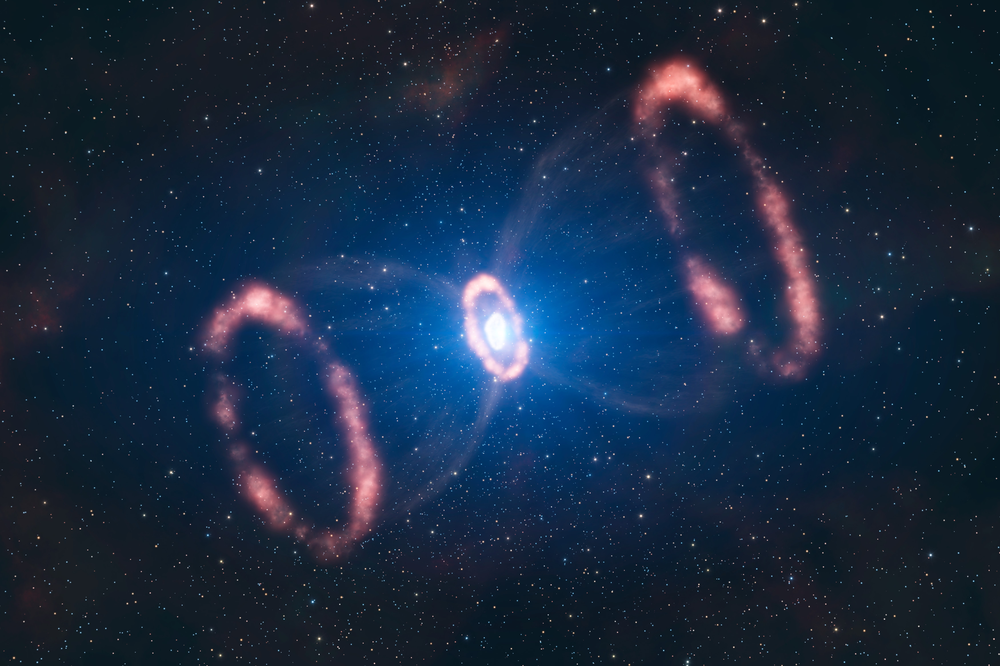

astronomie!
Astronomie is de wetenschap die zich bezighoudt met het bestuderen van het heelal. Astronomen onderzoeken hemellichamen zoals sterren, planeten, manen en sterrenstelsels, en proberen te begrijpen hoe ze ontstaan, bewegen en veranderen. Met telescopen en ruimtetelescopen kunnen wetenschappers objecten bestuderen die heel ver van de aarde staan. In de astronomie wordt bijvoorbeeld gekeken naar planeten zoals de Aarde en Mars, maar ook naar sterren zoals de Zon en grote verzamelingen sterren zoals de Melkweg. Door astronomie leren we meer over het ontstaan van het heelal en onze plaats daarin. 🌌🔭

